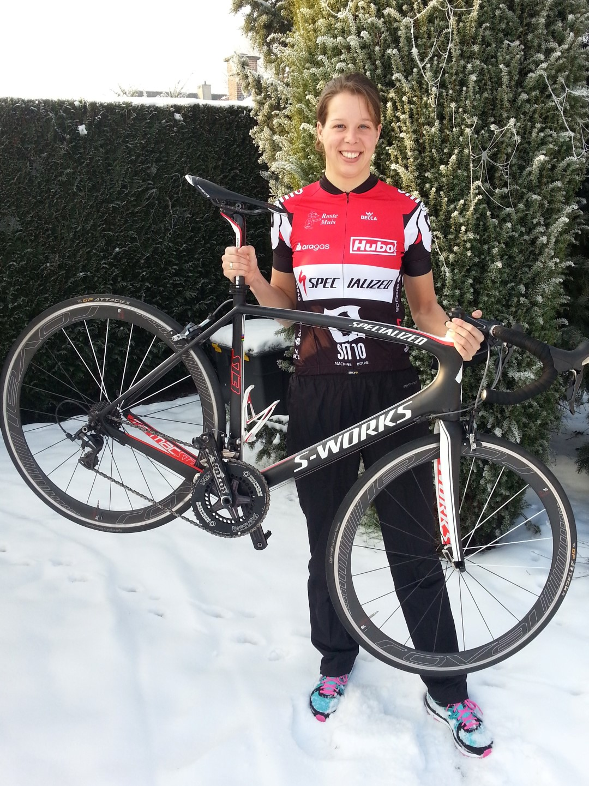

De Nederlandse nieuwkomer bij SMO-Specialized, Danne Boterenbrood, heeft er terug heel veel zin in. Toen ze vorig jaar de Spelen in Londen niet haalde door een samenloop van omstandigheden, wist ze niet goed hoe het verder moest met haar sportieve carriere. Ze zal er komend seizoen ongetwijfeld terug staan, want de honger is groot...
Hieronder vind je haar persoonlijk verslag terug.
Geen reden tot paniek. De onrust is puur van positieve aard. Ik wil op pad. Het is tijd om weer uit te vliegen.
Waar ik aan het eind van vorig jaar geen vliegtuig meer kon zien, kijk ik er nu weer naar uit.
Ik heb genoten van het winterse weer, de zware ritten door de sneeuw en de duurlopen bij -5. Het was super om alle familie en vrienden weer uitgebreid te zien en te spreken. Het was ouderwets gezellig om het WK Allround weer eens van A tot Z te volgen voor de buis.
Maar voor nu is het mooi geweest. De tijd van thee drinken, feesten, improviseren en gezapige weekenden is voorbij. Het is tijd om weer op pad te gaan.
Ik heb oprecht zin om m'n tas te pakken. Om de zonnebrand erbij te stoppen. Om m'n fiets uit elkaar te schroeven. Om m'n favoriete eten-voor-onderweg (mueslibollen van Bakker Bart) te kopen. Om nog een laatste rondje langs de velden te maken. Om de wereld weer over te vliegen.
Eerste bestemming: Potchefstroom, Zuid-Afrika. Het laatste continent van mijn lijstje.
Ik zie stoffige, rode dirt roads voor me, een knalblauw 50m-openwaterzwembad, een atletiekbaan die zindert in de hitte. Ik kijk uit naar trainingen in topje en broekje, naar zonnebrand, naar lurken aan de bidon en naar het opbouwen van fitheid en vorm.
Zondag is het vertrek, voor een stage van ruim 3 weken. Aan het einde van de stage volgt een eerste wedstrijd om eens te kijken hoe het ervoor staat. Er staat niets op het spel, de hoofdnummers zijn nog ver weg. Toch heb ik er nu al ontzettend veel zin in.
Dat komt ook omdat het de vuurdoop wordt voor mijn nieuwe, bloedrode, Specialized Venge. Ik hoop dat we goede vrienden gaan worden.
DB